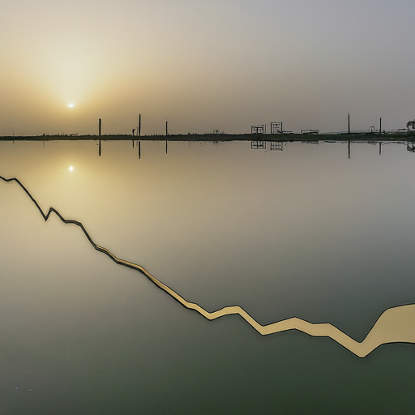
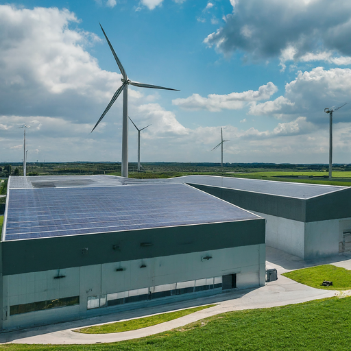

Introduction to Pakistan’s Industrial Sector
Key Drivers, Challenges, and Opportunities
The Industrial Sector of Pakistan
Overview of the industrial sector’s importance in Pakistan’s economy
Contribution to GDP, employment, and exports
Contribution to the GDP
The industrial sector is a significant contributor to Pakistan’s GDP. As of 2023, it contributes approximately 19% to the GDP. This sector plays a vital role in job creation, foreign exchange earnings, and overall economic development.
Industrial Composition
- Breakdown of industrial sub-sectors:
- Manufacturing
- Mining and Quarrying
- Construction
- Utilities
Major Industries
- Textile Industry: The largest and most important industry in Pakistan, accounting for a significant share of exports.
- Cement Industry: A major player in the construction sector, catering to the domestic market and exporting to neighboring countries.
- Food Processing Industry: A growing industry with immense potential, processing agricultural products like fruits, vegetables, and grains.
- Pharmaceutical Industry: Producing a wide range of medicines and drugs, catering to domestic needs and exporting to other countries.
- Automobile Industry: Assembling and manufacturing different types of vehicles, playing a crucial role in the transportation sector.
Mining and Quarrying
- Overview of the sector’s contribution
- Major minerals:
- Coal
- Natural gas
- Salt
Construction Sector
- Contribution to GDP and employment
- Infrastructure projects driving growth
- Challenges in project financing and regulatory environment
Utilities
- Overview of electricity, gas, and water supply
- Challenges in infrastructure development and distribution
Challenges

Challenges Facing the Industrial Sector
Energy Shortage: A major challenge faced by the industrial sector, leading to production disruptions and increased costs.
Infrastructure Bottlenecks: Inadequate infrastructure, such as transportation and logistics networks, hinders smooth operations and increases costs.
Lack of Technological Advancement: The need for investment in modern technologies to improve efficiency and compete globally.
High Cost of Doing Business: Factors like complex regulations, high taxes, and corruption contribute to a challenging business environment.
Regulatory Hurdles: A complex regulatory environment that creates barriers to entry and compliance.
Skills Gap: A shortage of skilled labor and technical expertise.
Government Initiatives
Initiatives to Promote Industrial Growth
The government has launched several initiatives to promote industrial growth:
Development of Special Economic Zones (SEZs): Offering tax breaks, infrastructure facilities, and other incentives to attract investment.
Focus on Renewable Energy: Promoting renewable energy sources like solar and wind power to address the energy shortage.
Upgrading Infrastructure: Investing in infrastructure development to improve transportation and logistics networks.
Promoting Technology Adoption: Encouraging the adoption of modern technologies through incentives and skill development programs.
Opportunities for Growth
Growing Domestic Market Demand: A large and growing population with increasing purchasing power.
Export Potential: Access to international markets and trade agreements with neighboring countries.
Technology Adoption and Innovation: Opportunities for modernization and efficiency improvement.
Investment Opportunities: Potential for foreign and domestic investment in various industries.
Conclusion
The industrial sector of Pakistan has the potential to be a significant driver of economic growth. Addressing the challenges and leveraging the opportunities will be crucial for realizing this potential.
Historical Perspective
Pakistan’s Industrial Evolution: A Historical Perspective
- Content: Understanding Pakistan’s industrial process requires examining its historical context, which has shaped the country’s industrial development trajectory.
Pre-Partition Era
- Before partition, the Indian subcontinent had a diverse industrial base, with major centers in present-day Pakistan such as Karachi and Lahore.
- Industries like textiles, jute, and leather flourished, serving both domestic and export markets.
- However, the partition in 1947 led to the displacement of industries and disruption in supply chains, impacting industrial growth.
Early Years of Independence
- In the early years of independence, Pakistan faced numerous challenges in rebuilding its industrial base.
- Efforts were made to promote import substitution industries to reduce dependency on foreign goods.
- The government initiated industrial policies focused on protecting domestic industries and promoting self-sufficiency.
Industrialization Drive
- Industrialization Drive in the 1960s and 1970s
- In the 1960s and 1970s, Pakistan embarked on an ambitious industrialization drive under the leadership of President Ayub Khan and later Prime Minister Zulfikar Ali Bhutto.
- The period saw the establishment of large-scale industries, including steel mills, fertilizer plants, and heavy machinery manufacturing units.
- The Green Revolution initiatives aimed to boost agricultural productivity and support industrial growth.
Shifts in Industrial Policy
Shifts in Industrial Policy in the 1980s and 1990s
- In the 1980s and 1990s, Pakistan witnessed shifts in industrial policy, with a move towards deregulation and privatization.
- Structural adjustment programs were implemented in response to economic crises, leading to liberalization and opening up of markets.
- These policies aimed to attract foreign investment and promote export-oriented industries.
Contemporary Industrial Landscape
- Today, Pakistan’s industrial landscape is characterized by a mix of traditional and modern sectors.
- Industries such as textiles, agriculture, and manufacturing continue to play a significant role in the economy.
- Efforts are underway to promote innovation, technology adoption, and value-added exports to enhance industrial competitiveness.
Challenges and Opportunities
- Pakistan faces challenges such as energy shortages, infrastructure constraints, and policy inconsistencies that hinder industrial growth.
- However, the country also possesses vast potential, including a young workforce, strategic location, and abundant natural resources, which can be leveraged to drive industrial development.
Conclusion - As Pakistan moves forward, it must learn from its industrial history and adopt policies that foster sustainable and inclusive industrial development. - By addressing challenges and seizing opportunities, Pakistan can build a vibrant and resilient industrial sector that contributes to economic growth and prosperity.
A futuristic Industrial Policy
National Industrial Policy 2023
An Industrial Advisory Council has articulated its vision of an export-led industrial development to take Pakistan’s exports to $100 billion within five years.
Current Industrial Landscape
An appraisal of Pakistan’s existing industrial architecture and its structural frailties: The current industrial structure has made Pakistan’s economy an outlier in a high-growth geographical region, despite being surrounded by fast-growing economies such as China and India.
- Structural Dysfunction
Pakistan’s imports of $55.3 billion were double its exports during FY 2022-23, with only a fraction of imports used as inputs for export-oriented production. This indicates a significant imbalance and highlights the structural dysfunction of Pakistan’s industrial sector.
- Rationale for Industrial Policy
Divergent Views : National industrial policy vs. market-led development. While some argue for market-led development, others point to successful examples like Japan, South Korea, and Taiwan, which have used industrial policies effectively.
4 Major Distortions in Pakistan’s Industrial Structure
- Anti-export bias
- Reliance on import substitution
- Market-seeking FDI
- Policy capture
These distortions hinder export-led growth and efficiency.
Anti-Export Bias - Pakistan’s industrial architecture exhibits an anti-export bias due to high import tariffs, incentivizing domestic industries to prioritize local sales over exports. - For instance, a product priced at $100 globally, after a 20% import tariff, is sold for $120 domestically, discouraging exports. - This bias results in multiple damages: (a) Consumers pay higher prices domestically, (b) Domestic producers, shielded from competition, rely on captive domestic markets, and (c) Even if production costs are below $100, exporters find it more profitable to sell domestically at $120. - Thus, the anti-export bias hampers export competitiveness and perpetuates reliance on domestic markets.
Import Substitution
- Import Substitution and FDI Challenges
- Import substitution remains a dominant strategy for industrial development, supported by decision-makers. While advocated for saving foreign exchange, it hinders export competitiveness.
- Protected import substitution industries, being noncompetitive, contribute to the permanent burden on foreign exchange by relying on imported inputs.
Foreign Direct Investment (FDI)
Foreign Direct Investment (FDI) in Pakistan’s industrial sector tends to be market-seeking rather than efficiency-seeking. Multinational Enterprises (MNEs) focus on local production, consuming foreign exchange for imported inputs and repatriating profits abroad.
Policy Capture
Policy capture is prevalent in Pakistan’s industrial structure, leading to inefficiency and reliance on state interventions and protection. Subsidies and protection fail to address viability concerns post-subsidy withdrawal, perpetuating industry dependence on state support and inhibiting growth beyond infancy stage.
Need for Radical Reforms A forward-looking industrial policy needs to institute radical reforms at both the structural and enterprise levels. This includes transitioning from import substitution to export-led growth and creating an enabling environment for new firms.
Future Industrial Policy A futuristic industrial policy aims at creating a globally competitive industrial structure and rewarding efficiency and productivity over lobbying skills. It emphasizes the importance of self-sustaining industries and a gradual transition to an innovation-driven economy.
Challenges and Goals Developing an effective industrial policy faces challenges from vested interests and maneuvering of policy forums. The vital goal is to steer the transition towards an efficiency-driven export-led economy in the medium term and innovation-driven in the long term.
Conclusion Building a globally competitive industrial structure requires strategic reforms and a long-term vision. Despite challenges, the goal of achieving export-led growth and innovation-driven economy remains paramount for Pakistan’s industrial development.